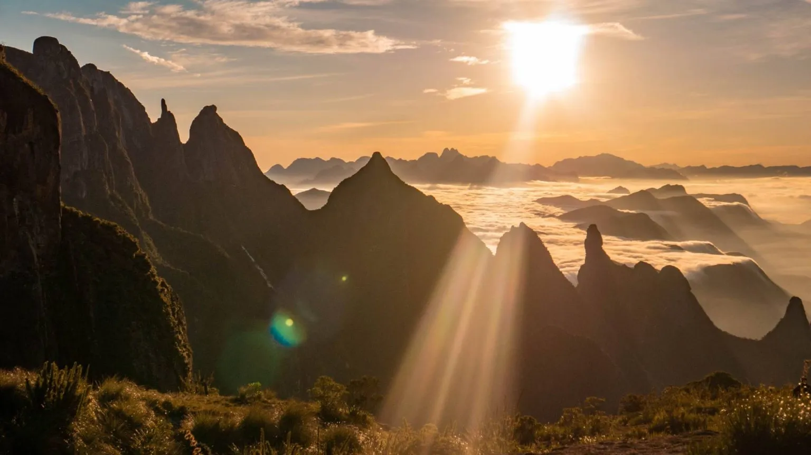

Trilhas
-
 Trilha Suspensa:
Trilha Suspensa:A Trilha Suspensa, localizada na sede de Teresópolis do Parque Nacional da Serra dos Órgãos, é um percurso leve e acessível, ideal para visitantes de todas as idades. Com cerca de 1,3 km de extensão e duração média de 1 hora, a trilha passa por uma passarela de madeira suspensa que chega a até 8 metros de altura, proporcionando uma experiência única entre as copas das árvores da Mata Atlântica.
-

Travessia Petrópolis–Teresópolis:
A Travessia Petrópolis-Teresópolis, no Parque Nacional da Serra dos Órgãos, é considerada uma das mais belas e desafiadoras trilhas do Brasil. Com cerca de 30 km de extensão, ela liga as sedes de Petrópolis e Teresópolis, passando por campos de altitude, florestas de Mata Atlântica e mirantes impressionantes sobre as montanhas da Serra dos Órgãos.